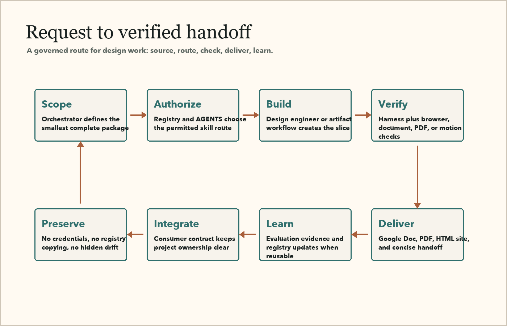

Registry
One source of truth for skill status, license posture, recommended use, and conflicts.
Design Intelligence
A compact operating layer routes the right skill, agent, verification check, and handoff artifact for each project.

One source of truth for skill status, license posture, recommended use, and conflicts.
Director, implementer, curator, integrator, and reviewer roles with clear output contracts.
Local checks prove that manifests, scenarios, skills, registry evidence, and connections line up.
Non-secret records identify external tools and approval points without storing credentials.